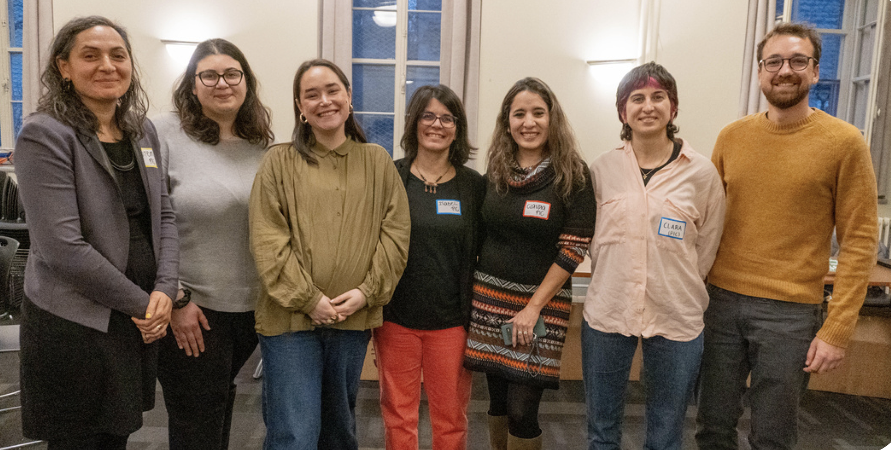
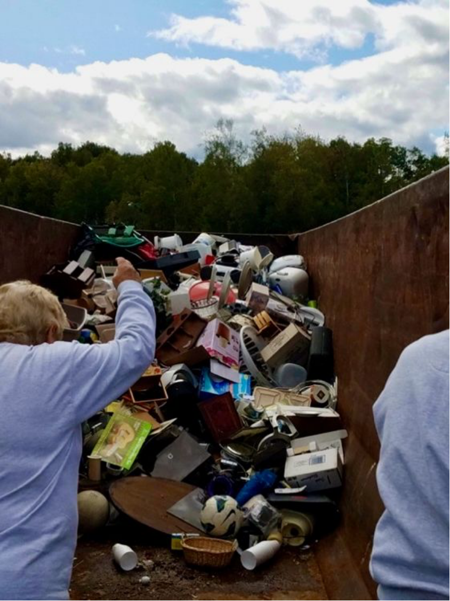
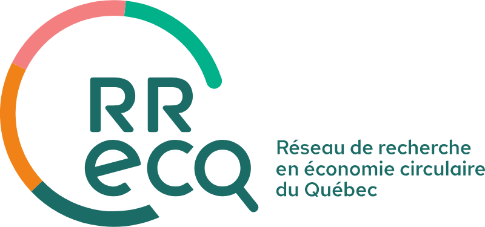
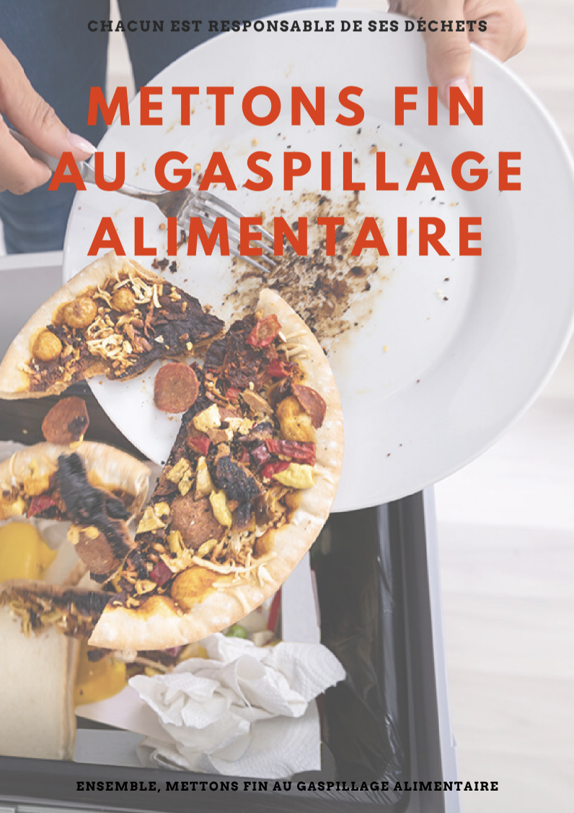

Entre initiatives citoyennes et pouvoirs publics municipaux:
Contributions citoyennes et enjeux genrés de la transition vers l'économie circulaire.

Ici tu peux découvrir certains des projets de recherche auxquels j'ai contribué.
Contributions citoyennes et enjeux genrés de la transition vers l'économie circulaire.
Outils de diagnostic, critères de planification urbaine et instruments spécialisés de politique publique.

Projet Impact Collectif, Centraide.

Base de données en adaptation climatique


Theory, practice and potential.


La gouvernance démocratique et participative en économie sociale et circulaire

Une étude de cas pour le Crous à Grenoble
